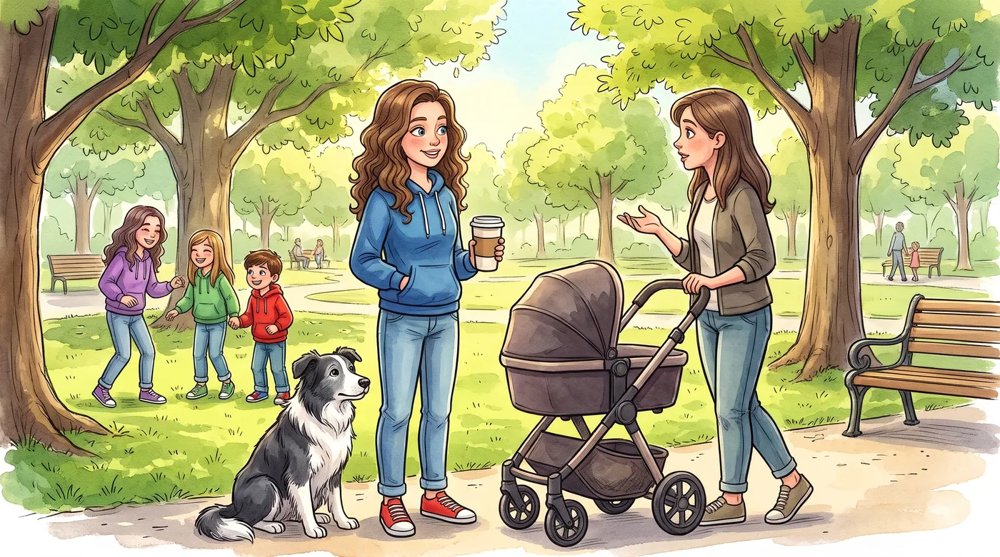
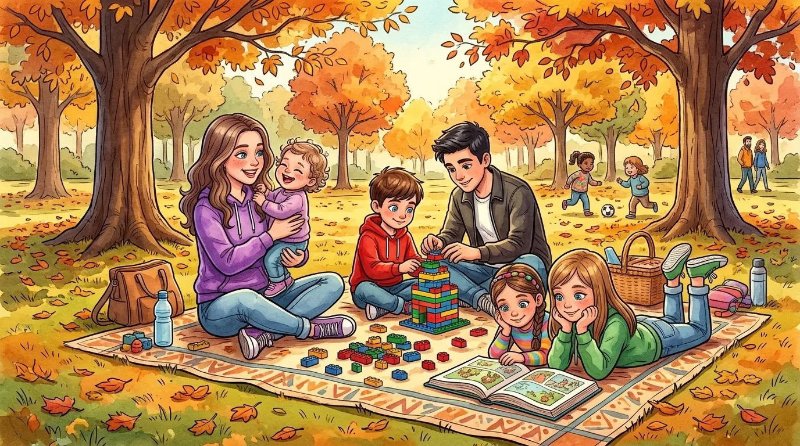
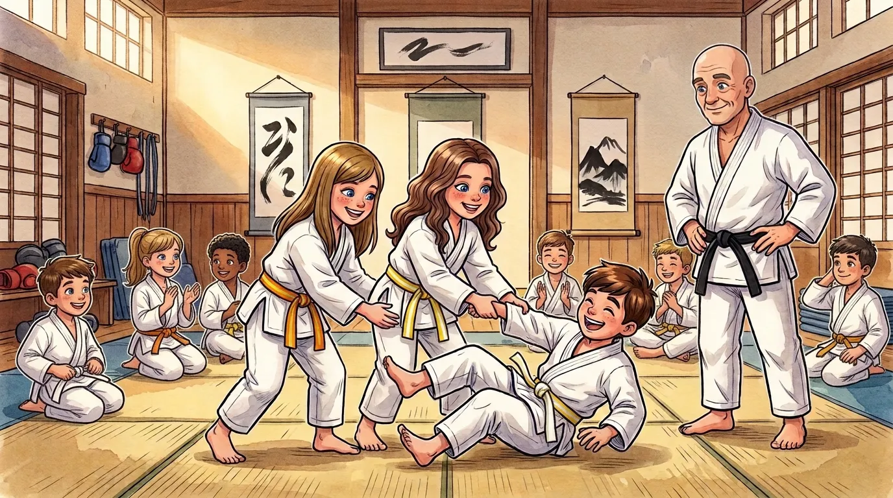
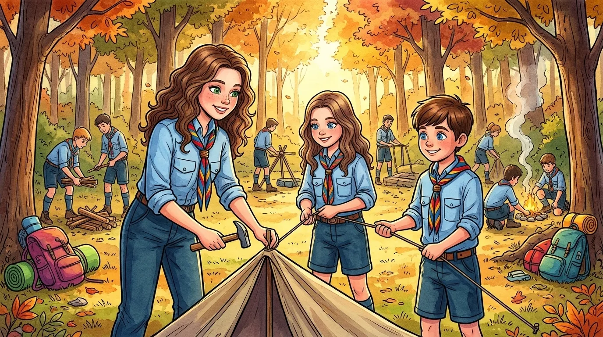
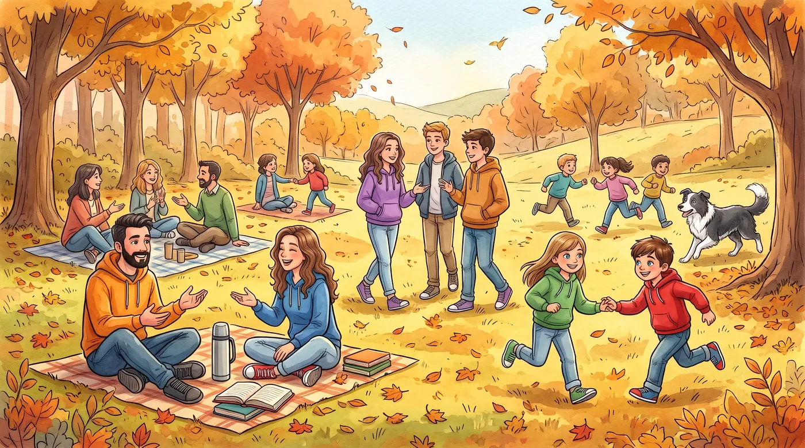

È sempre la prima domanda.
Qualche volta è la seconda. Succede quando la prima è: "Istruzione parentale? Ma si può fare? Pensavo fosse illegale."
Sì, si può fare. È un diritto garantito dalla Costituzione, è legale ed è previsto dalla legge. Chiarito questo, arriva lei, puntuale: "E la socializzazione?"
Me l'hanno chiesto così tante volte che ormai la sento arrivare prima che la persona apra bocca.

Due modi di chiederlo
Con il tempo ho imparato che questa domanda la fanno due gruppi di persone.
Nel primo gruppo c'è chi è preoccupato davvero. Vuole bene ai miei figli, o semplicemente è curioso, e si chiede come faranno a farsi degli amici. A queste persone rispondo volentieri, e anche a lungo.
Nel secondo gruppo c'è chi mi sta giudicando, e traveste il giudizio da domanda, perché una domanda sembra sempre lecita. Si riconoscono subito: la risposta non la ascoltano.
Questo articolo è per il primo gruppo. Il secondo, se vuole, può leggerlo lo stesso.
Stare in venticinque non è socializzare
La prima cosa che rispondo è questa: stare nella stessa stanza con venticinque coetanei non insegna, da solo, a stare con gli altri.
A stare con gli altri si impara quando intorno c'è qualcuno che ti fa vedere come si fa. Quando gli adulti danno l'esempio giusto, i bambini li seguono in un attimo. Quando danno quello sbagliato, li seguono lo stesso. Noi l'abbiamo imparato in piscina, e te l'ho già raccontato: un gruppo di coetanei può fare molto bene, e può fare molto male.
Il numero dei bambini nella stanza, da solo, non garantisce niente.
Meno amici, ma veri
La seconda cosa che rispondo è che i miei figli hanno meno amici di quelli che avrebbero in una classe. Ed è vero.
Però sono amici scelti. Nessuno li ha messi nello stesso banco: si sono trovati, si sono piaciuti, e si cercano. Sono amicizie belle e profonde, di quelle che reggono anche quando ci si vede meno.
Con tutte le età
La terza cosa è quella che mi sta più a cuore. I miei figli stanno con persone di tutte le età: con i grandi, con i piccoli, con gli anziani.
Ho un figlio capace di fermare uno sconosciuto in spiaggia per parlargli di dinosauri, e di andare avanti per un'ora. Non so se si chiami socializzazione. So che lui con gli adulti ci parla, e che gli adulti di solito restano ad ascoltare.
D'altra parte, finita la scuola, a nessuno capita più di passare le giornate con venticinque persone nate nel suo stesso anno. Il mondo è fatto di età mescolate, e loro ci stanno dentro da subito.

Dove sono, gli altri
Sono in tanti posti, e nessuno di questi posti è capitato per caso.
C'è il judo. Sul tatami la prima cosa che si impara è cadere. La seconda è che chi hai davanti è il tuo specchio, e non il tuo nemico. Noi abbiamo trovato un dojo accogliente, dove i maestri danno l'esempio di una competizione sana, e i bambini lo seguono senza bisogno di tanti discorsi.

Ci sono gli scout. Lì si sta in un gruppo dove i più grandi si prendono cura dei più piccoli, si dorme fuori casa e ci si arrangia con quello che c'è. È una scuola di convivenza che io, da sola, non potrei mai offrire.

Ci sono la parrocchia e gli altri gruppi, ognuno con le sue facce e le sue regole.
E poi ci sono gli amici, e le altre famiglie. Con loro si passano i pomeriggi e si fanno le gite. E spesso, mentre i bambini giocano, noi grandi ci scambiamo dubbi, libri e incoraggiamenti.

La fatica vera
Una fatica c'è, e sarebbe sciocco nasconderla. La socializzazione, a casa nostra, va organizzata.
A scuola gli altri li trovi la mattina, già seduti. Da noi gli incontri bisogna cercarli, metterli nel planner, portarceli in macchina. Non capitano da soli. È un lavoro, e lo faccio io.
Però ha un vantaggio. Siccome niente capita per caso, ogni incontro è una cosa che abbiamo scelto.
La mia risposta, in breve
Quindi sì: socializzano. Con meno persone alla volta, di tutte le età, e con qualche adulto nei paraggi che dà l'esempio.
La domanda di oggi: tu, dove hai imparato a stare con gli altri? Davvero in classe?
A presto!